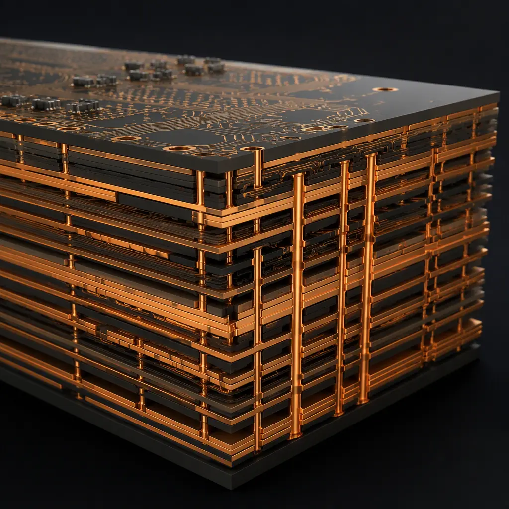
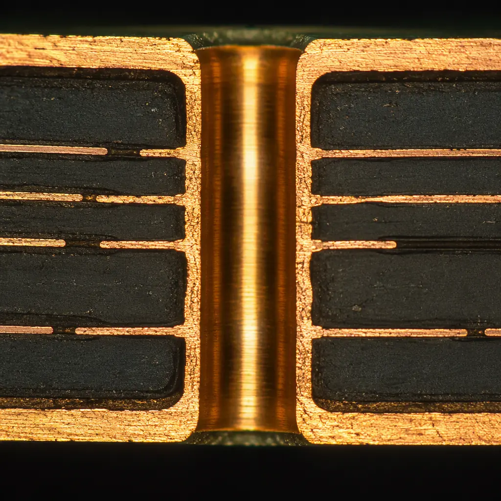
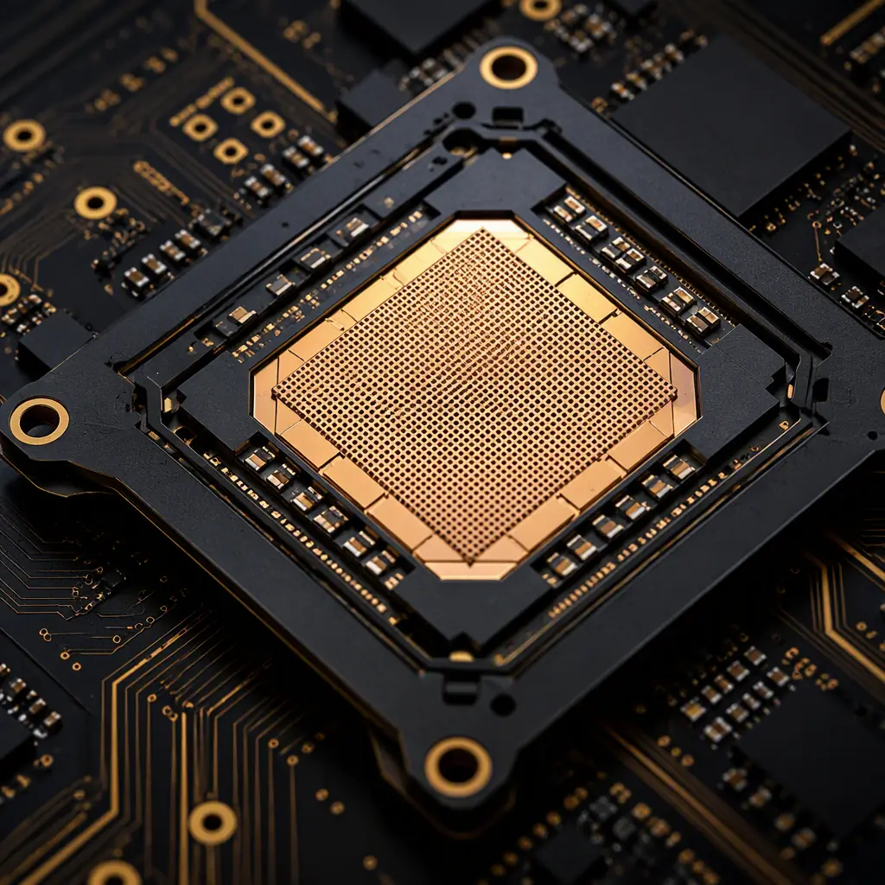

A 32-port 400G data center switch routes 12.8 Tbps of traffic through a single switch ASIC that draws 300–500W. Every one of those 32 ports — plus uplinks, management, and power — crosses the PCB as a 56G or 112G SerDes differential pair, and the board itself must be built to tolerances measured in microns. Network switch and router PCBs are among the most demanding products a PCB manufacturer can build: 16–32 layers, low-loss laminates, backdrilling with ±50µm depth control, and thermal design that moves hundreds of watts without warping the board.
At Huaxing PCBA, we manufacture switch and router boards up to 32 layers with controlled impedance of ±5%, sequential lamination for complex stackups, and backdrilling on vias above 5 Gbps. Our factory runs a dedicated high-layer-count line with AOI, X-ray, and impedance TDR testing on 100% of panels. Here is what to specify on your next networking PCB order.

SerDes Routing at 112G: The Rules That Make or Break a Switch Board
Modern switch ASICs drive 112G PAM4 SerDes on every port. At those data rates, the electrical length of a trace is measured in millimeters of wavelength — 112G PAM4 has a fundamental frequency of ~28 GHz, and the routing rules are fundamentally different from 10G-era designs:
Insertion Loss Budget: Every dB Costs You Ports
A 112G SerDes link has a typical channel budget of 20–24 dB at 28 GHz including connectors, vias, and trace. A standard FR-4 trace loses 0.5–1.0 dB/inch at 28 GHz; a low-loss laminate like Megtron 6 or Rogers drops that to 0.3–0.5 dB/inch. If your switch design routes 6 inches of trace to a port connector, the difference between FR-4 and low-loss material is 3+ dB — often the difference between a link that opens and one that doesn't. Our laminate selection guide compares Isola, Panasonic, and Shengyi materials with loss data.
Via Stub Elimination: Backdrilling Is Not Optional Above 25G
Every through-hole via on a high-speed trace leaves a stub — the unused portion of the barrel below the signal layer. At 28 GHz, a 10 mil stub resonates and can cost 3–5 dB of insertion loss. Backdrilling removes the stub with a controlled-depth second drill, leaving typically 4–6 mil of remaining barrel. Specify backdrill depth tolerance of ±50µm (some fabs hold ±75µm) and backdrill on ALL signal vias above 5 Gbps. Our backdrilling guide covers stub effects and depth control in detail.
PAM4 Signal Integrity: Crosstalk and Return Loss Dominate
PAM4 uses four amplitude levels instead of two, so the signal-to-noise margin is roughly one-third of NRZ. That makes near-end crosstalk (NEXT) and return loss the binding constraints. Rules of thumb at 112G: keep 3W spacing between adjacent SerDes pairs, use ground via fencing on pair-to-pair boundaries, and avoid layer changes without a ground via within 0.5mm of the transition. Our crosstalk analysis guide quantifies the coupling budgets.
Procurement Insight: When requesting quotes for a 100G/400G switch board, ask each supplier for their measured insertion loss on the specific laminate you spec — not the datasheet number. Material loss varies by prepreg lot, and a supplier's actual process (etch factor, surface roughness) can add 0.1–0.2 dB/inch over the datasheet. A 12.8Tbps switch with marginal loss budget will fail link training at temperature even though the design simulates clean.
Stackup Design: 16–32 Layers of Sequential Lamination
Switch boards carry dozens of SerDes pairs, power planes for multiple voltage rails, and dense BGA fan-out — typically requiring 20–32 layers. High layer counts force sequential lamination (build-up), which changes cost and yield dramatically:
| Switch Class | Layer Count | Lamination | Typical Material |
|---|---|---|---|
| Access switch (1/10G) | 8–14 layers | Single lamination | FR-4 / Mid-loss |
| Distribution switch (25/100G) | 14–20 layers | Single + backdrill | Mid-loss (Megtron 4 class) |
| Core switch (400G) | 20–32 layers | Sequential lamination | Low-loss (Megtron 6 / Rogers) |
| Backplane / Fabric | 24–40 layers | Sequential + backdrill | Low-loss, low-CTE |
Sequential lamination means the board is pressed, drilled, and plated in stages — layer pairs are built up one at a time. Each additional lamination cycle adds cost and warpage risk. For a 24-layer design with two build-up cycles, plan for 15–25% higher unit cost than a single-lamination 24-layer board, and insist on warpage control: specify flatness ≤ 0.75% (IPC-6012 Class 3) and verify with thermal cycling on first articles. Our stackup design guide walks through layer planning for high-speed systems.
Material System: Low-Loss Core + Standard Prepreg Can Save Money
A full Megtron 6 stackup is expensive. A common cost optimization: use low-loss material only on the signal layers carrying 56G/112G traffic, and standard high-Tg FR-4 for the power/ground sandwich layers. This hybrid stackup cuts material cost 20–30% while keeping the critical channels within budget — provided the fabricator can manage CTE mismatch between material systems. Our materials guide covers FR-4 vs high-Tg vs low-loss selection.
Impedance Control on 100Ω Differential Pairs: ±5% or Nothing
SerDes pairs are specified at 100Ω differential ±5% (some designs at ±7% for 56G with equalization headroom). On a 24-layer board, impedance is set by trace width, dielectric thickness, and copper weight — and it drifts with etch uniformity and prepreg flow during lamination. Require impedance coupons on every panel edge and TDR verification with a statistical report (Cpk ≥ 1.33) rather than single-point measurements. Our impedance control guide explains the full verification workflow.

Thermal Design: Moving 300W+ Off a Switch ASIC
A 400G switch ASIC dissipates more heat than a desktop CPU, inside a chassis that must fit in 1U. The PCB's thermal role is both conducting heat out and surviving the temperature gradient without warping:
Thermal Via Arrays: 0.3mm Vias, 1.0mm Pitch, Filled or Not
Under the ASIC's exposed pad, use a dense array of 0.3mm thermal vias at 1.0mm pitch (approximately 300–400 vias under a 45×45mm package) connecting to inner ground/thermal planes. Whether to fill with conductive epoxy (thermal via fill) depends on whether the ASIC uses a solder-attached heatsink — filled vias prevent solder wicking and voiding. Specify via fill for flip-chip BGA packages that are reflowed with a heat spreader. Our via fill guide compares conductive vs non-conductive options.
Copper Weight and Plane Design for 48V and POL Power
Switch boards run a 48V mid-bus with point-of-load (POL) converters stepping to 0.8–1.0V core rails drawing 200–400A. The core power plane must carry that current without excessive drop: use 2oz copper on power planes (sometimes 3oz for the 48V distribution), with multiple parallel vias between planes and a power integrity analysis that models plane inductance. Our copper weight guide covers 1oz–6oz selection for high-current planes.
Warpage Control: The Silent Yield Killer at 32 Layers
Asymmetric layer stacking, mixed material systems, and heavy copper create internal stress that warps large switch boards during reflow. A warped 32-layer board fails SMT assembly (solder joints on the ASIC don't wet) and can crack the ASIC package. Specify board flatness ≤ 0.75%, symmetric stackup, and thermal cycling validation on first articles. Our warpage prevention guide details root causes and countermeasures.
Key Takeaway: Switch PCB thermal design is a three-way trade: via fill type, copper weight, and warpage. Adding 2oz planes helps power integrity but increases warpage risk; dense via arrays help conduction but complicate routing on adjacent layers. A supplier with experience on high-layer-count boards will flag these interactions in DFM — a supplier that just says "yes, we can do 32 layers" is telling you they haven't built many.
Backplane and Line Card: When the PCB Is the System Bus
Modular chassis switches separate switching fabric from line cards, connected through a backplane that can be 24–40 layers with hundreds of differential pairs running the length of the chassis. Backplane PCB requirements are the extreme end of the spectrum:
Long-Trace Loss Management: 20–30 Inches of FR-4 Is Not Possible
A backplane trace can run 20–30 inches between connectors. At 56G, even low-loss material loses 6–9 dB over that length, so the design must budget for the full channel including the backplane connector's 2–3 dB. This is why backplanes use low-CTE, low-loss materials (Megtron 6, Rogers 3000/4000 series) and why the laminate selection is made at the architecture stage, not the fab stage. Our data center server PCB guide covers the related high-layer-count design rules.
Connector Landing: Press-Fit and Plating Thickness
Backplane connectors use press-fit (compliant pin) terminations, which require precise plated through-hole dimensions: finished hole size tolerance of ±50µm, hole wall copper ≥ 25µm, and no wicking or voiding in the barrel. Specify hard gold or ENIG on connector areas and confirm the fabricator's drill accuracy on large-format panels. Our press-fit guide covers the mechanical requirements.
Panel Size Limits: Backplanes Push the Maximum Board Size
Backplanes routinely approach 600×800mm — the practical maximum for standard PCB manufacturing. Panel utilization drops, lamination pressure uniformity becomes critical, and registration across a large panel is harder. Confirm the fabricator's maximum board size and their experience with large-format sequential lamination before committing. Our capability includes boards up to 600×800mm.

Procurement Checklist for Switch and Router PCBs
Demand a Material and Loss Budget Sign-Off
Ask the supplier to confirm the exact laminate/PPG stackup (vendor, grade, DK/DF values) and a channel loss budget for your longest SerDes route, before production. Get this in writing — material substitution is the most common silent change in networking PCB quotes. If they substitute Megtron 6 with a "similar" material, the loss budget changes and links may fail.
Verify Backdrill Capability With Cross-Sections
Backdrill quality is invisible until you cut the board. Require microsection cross-sections of backdrilled vias on first articles showing remaining stub length within ±50µm of spec, and confirm the drill depth control on your specific board thickness. Our cross-section interpretation guide shows how to read these reports.
Specify Thermal Cycling and Warpage Acceptance in the PO
Put flatness ≤ 0.75% and thermal cycling (−40°C to +125°C, 500 cycles) acceptance criteria in the purchase order. Measure warpage after reflow simulation, not just on bare boards — that is when the failure appears. For 300W+ ASIC designs, require thermal impedance validation on first articles. Our thermal management guide covers the validation methods.
Test Strategy: Flying Probe + Impedance TDR + X-Ray
High-layer-count boards need a layered test strategy: flying probe for continuity/isolation (100% of nets), TDR impedance verification on coupons (100% of panels), and X-ray for BGA and backdrill alignment. Confirm the supplier can do this in-house — sending 32-layer boards to a third-party test house adds a week of lead time. Our testing methods guide compares the options.
Summary: Switch PCBs Are a Materials and Process Game
Network switch and router PCBs are won or lost on three things: material selection (loss budget), process control (backdrill depth, impedance, registration), and thermal engineering (via arrays, copper weight, warpage). These are not design-only problems — they are manufacturing capability problems, and the difference between suppliers is measured in dB and microns, not in price per layer.
At Huaxing PCBA, we manufacture switch, router, and backplane PCBs up to 32 layers with sequential lamination, backdrilling, low-loss material capability (Megtron 6, Rogers), and 2–3oz copper planes. Our high-layer-count line includes impedance TDR on 100% of panels, X-ray inspection, and thermal cycling validation. Read our signal integrity guide for the broader high-speed design framework, or send us your switch PCB files for a DFM review covering stackup, loss budget, and backdrill strategy within 24 hours.